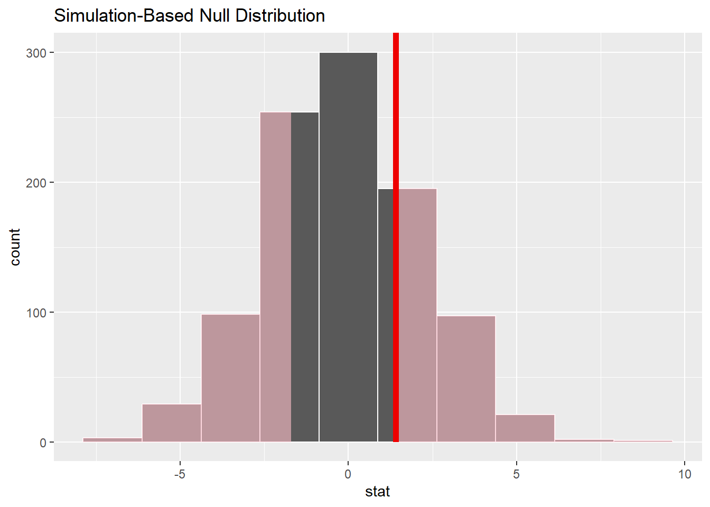

pacman::p_load(tidyverse, tidymodels)Hands-on Ex1 - TidyModels
Overview
In this hands-on exercise, we will explore the infer package to perform statistical inference testing.
From the site:
The package is centered around 4 main verbs, supplemented with many utilities to visualize and extract value from their outputs.
specify()allows you to specify the variable, or relationship between variables, that you're interested in.hypothesize()allows you to declare the null hypothesis.generate()allows you to generate data reflecting the null hypothesis.calculate()allows you to calculate a distribution of statistics from the generated data to form the null distribution.

Getting Started
Installing and loading packages
Importing Data
exam <- read_csv("data\\Exam_data.csv")Rows: 322 Columns: 7
── Column specification ────────────────────────────────────────────────────────
Delimiter: ","
chr (4): ID, CLASS, GENDER, RACE
dbl (3): ENGLISH, MATHS, SCIENCE
ℹ Use `spec()` to retrieve the full column specification for this data.
ℹ Specify the column types or set `show_col_types = FALSE` to quiet this message.Exploratory Data Analysis
ggplot(data = exam,
aes(x=GENDER, y = MATHS)) +
geom_boxplot() +
ylab("Math Scores") #or labs(y = "Math Scores")Summary Statistics
exam %>%
group_by(GENDER) %>%
summarize(n = n(),
mean_score = mean(MATHS),
std_dev = sd(MATHS))# A tibble: 2 × 4
GENDER n mean_score std_dev
<chr> <int> <dbl> <dbl>
1 Female 170 70.0 18.7
2 Male 152 68.6 21.4We can see that the average scores for females are higher than males. On the other hand, female’s standard deviation is lower than males. Let’s investigate further - in the next section, we will seek to find out if the average scores of females are higher than males using approporiate statistical methods.
Specify Variables
In the code chunk below, specify()from infer package allows us to specify the variables that we will need for the statistical test. Do note that the base file exam needs to be in a tibble data frame. The formula must be specified such that the response variable (qualitative data) is on the left and explanatory (categorical data) on the right.
exam %>%
specify(formula = MATHS~GENDER)Response: MATHS (numeric)
Explanatory: GENDER (factor)
# A tibble: 322 × 2
MATHS GENDER
<dbl> <fct>
1 9 Male
2 22 Female
3 16 Male
4 77 Male
5 11 Male
6 16 Female
7 21 Male
8 18 Male
9 19 Male
10 49 Male
# … with 312 more rowsHypothesis
In the code chunk below, we will be using hypothesise()from the infer package. We will test for independent test.
exam %>%
specify(formula = MATHS ~ GENDER) %>%
hypothesise(null = "independence")Response: MATHS (numeric)
Explanatory: GENDER (factor)
Null Hypothesis: independence
# A tibble: 322 × 2
MATHS GENDER
<dbl> <fct>
1 9 Male
2 22 Female
3 16 Male
4 77 Male
5 11 Male
6 16 Female
7 21 Male
8 18 Male
9 19 Male
10 49 Male
# … with 312 more rowsIn the output above, we can see that the null hypothesis is defined as ‘independence’.
Generate Replicates
We ar using the generate() from infer package
Note that in reps parameter, when we indicate reps = 1,000, it means that each value is replicated 1,000 times following a randomised. This is not to be confused with oversampling which is used when there is a mismatch number of data points between two variables.
In our case, we do not have this issue. However, what we want to ensure is that there is sufficient records for us to do our analysis. Since we specified “permit”, it will, for each replicate, the input value will be randomly reassigned (without replacement) to a new output value in the sample.
This step is helpful when our dataset is small or we have doubts about how representative of the population it is.
set.seed(1234)
exam %>%
specify(formula = MATHS ~ GENDER ) %>%
hypothesise(null = "independence") %>%
generate(reps = 1000, type = "permute") %>%
View()Calculate Summary Statistics
We will use calculate()from infer package to calculate summary statistics. The stat= parameter allows us to specify the statistics we need. These are valid inputs: “mean”, “median”, “sum”, “sd”, “prop”, “count”, “diff in means”, “diff in medians”, “diff in props”, “Chisq”, “F”, “slope”, “correlation”, “t”, “z”, “ratio of props”, “odds ratio”
We will compute the summary statistics of our 1,000 permutations.
set.seed(1234)
null_distribution_maths <- exam %>%
specify(formula = MATHS ~ GENDER ) %>%
hypothesise(null = "independence") %>%
generate(reps = 1000, type = "permute") %>%
calculate(stat = "diff in means",
order = c("Female","Male"))
null_distribution_mathsResponse: MATHS (numeric)
Explanatory: GENDER (factor)
Null Hypothesis: independence
# A tibble: 1,000 × 2
replicate stat
<int> <dbl>
1 1 -6.12
2 2 3.12
3 3 -4.13
4 4 -6.67
5 5 1.46
6 6 -1.35
7 7 0.467
8 8 1.64
9 9 -1.99
10 10 1.64
# … with 990 more rows#based on observed / actual values
obs_diff_means <- exam %>%
specify(formula = MATHS ~ GENDER ) %>%
calculate(stat = "diff in means",
order = c("Female","Male"))
obs_diff_meansResponse: MATHS (numeric)
Explanatory: GENDER (factor)
# A tibble: 1 × 1
stat
<dbl>
1 1.40The output shows that the difference in mean is 1.40.
visualise(null_distribution_maths,
bins = 10) +
shade_p_value(obs_stat = obs_diff_means,
direction = 'both')
null_distribution_maths %>%
get_p_value(obs_stat = obs_diff_means,
direction = 'both')# A tibble: 1 × 1
p_value
<dbl>
1 0.496Based on the simulation, the p-value is within the sampled data? We do not have sufficient statistical evidence to reject the null hypothesis (observed difference is not statistical significant).
Conclusion
In this exercise, we used a simple data set to illustrate how we may use infer package for statistical inference testing.